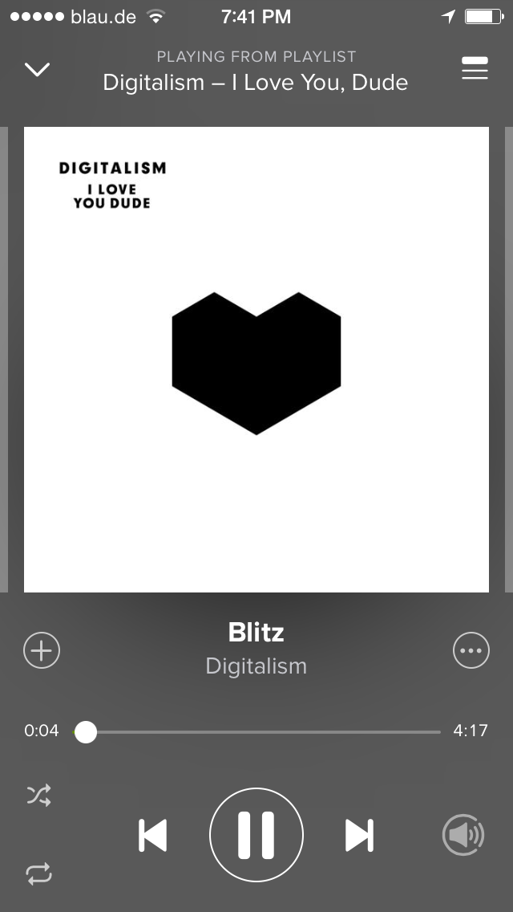
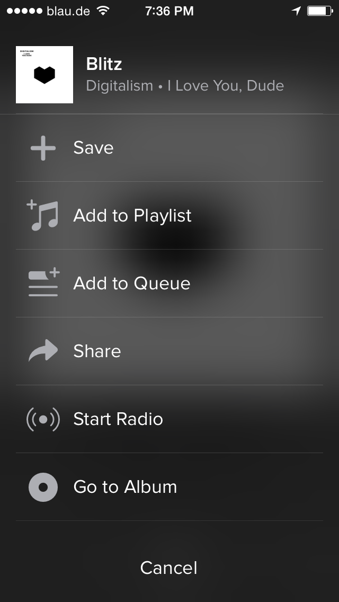
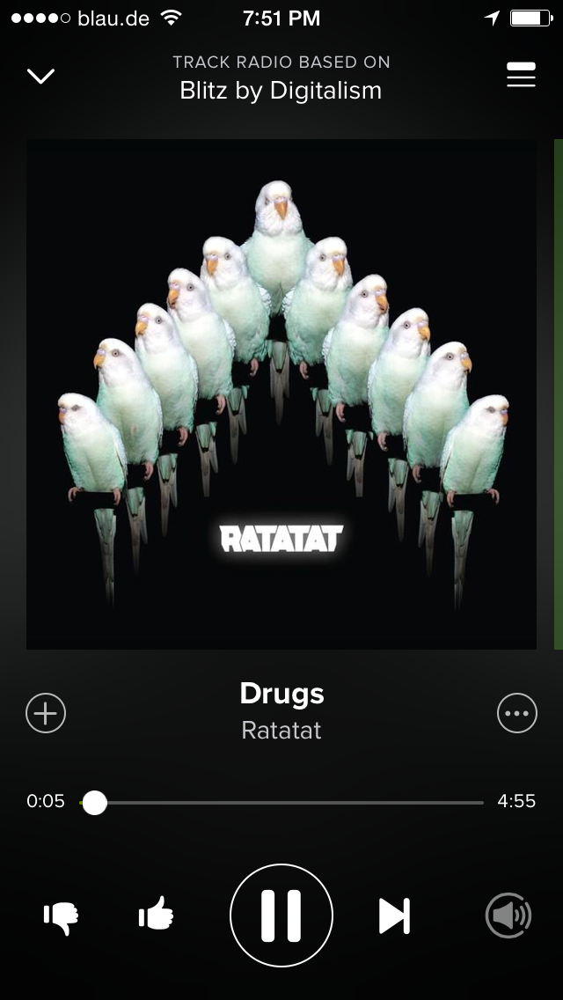
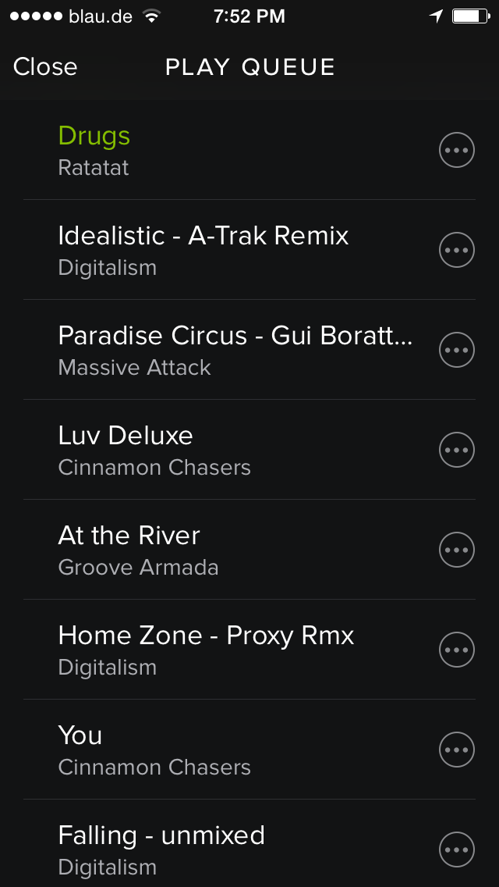
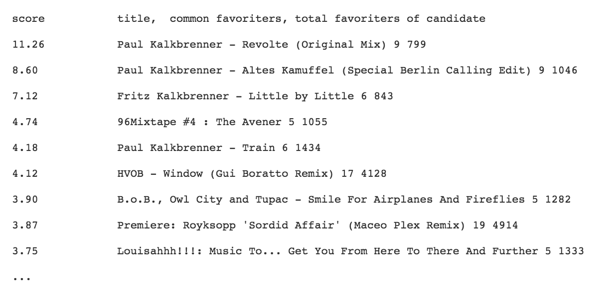

Soundcloud radio
The idea is to build a music player similar to Pandora and last.fm that will use the Soundcloud API to display and play music:
The emphasis is to provide a personalised experience that tries to model and learn both your taste and your session preferences after finding relations between songs based on collaborative filtering of public user data i.e playlists and favorites. The app should principally be able to play music from multiple sources. For simplicity I will restrict the use case to Soundcloud because there currently is no personalised player of the mostly user generated content (e.g. remixes and DJ sets).
I imagine the user experience to be similar to the Spotify Radio feature. When the user likes one particular song they can start a radio station based on an the current track (e.g. Digitalism - Blitz). The app then creates a hidden playlist of related songs that is adjusted by the user’s explicit feedback (thumbs up/thumbs down)
   
Under the hood: Creating a music channel based on a song or artist
I am going to to use publicly available user data on playlists and favorites (via Soundcloud API). Starting with “Digitalism - Bitz” I can look for Soundcloud users that have that song (seed) in their favorite list. Additionally I can look for public playlists that contain the seed-song.
What are the songs that frequently co-occur with this song?
A prototype python script generating a candidate list that isn’t horrible with current Soundcloud API functionality :
#get all fans
fans = [ (fan.id, fan.username)
for fan in client.get('/tracks/%d/favoriters' % tid) ]
#get all songs from fans
songs = []
for uid in fans:
try:
user = [u['favorites'] for u in db.user_favorites.find({"uid" : uid})] # does user exist in cache?
if len(user)>0: #if uid in mongo
ufavs = user[0]
else:
favorites = [[track.id, track.title] for track in client.get('/users/%d/favorites' % uid)]
playslists = getAllSongsFromPL([track.id for track in client.get('/users/%d/playlists'%uid)])
following = getAllSongsFromFollowings([u.id for u in client.get('/users/%d/followings' %uid)])
followers = getAllSongsFromFollowings([u.id for u in client.get('/users/%d/followers' %uid)])
#ucomm = getAllSongsFromComments(uid)
combined = favorites + playslists + following +followers
writeUserToMongo(uid, combined, db) #TODO: probably better to store just the id and have a lookup table in mongo
songs=songs+[track for track in combined]
except requests.HTTPError, e: print 'HTTP ERROR occured for user %d: %s' %(uid, e)
Recommendations (candidate list) for "Sky and Sand - Paul Kalkbrenner" are:
The related score (first column above) in this case is simply the number of co-occurences of two songs (seed and candidate) in the same user’s favorites list divided by the frequency of the candidate in ANY users favorites list. This normalisation is important to balance relevance and popularity: “Revolte (Original Mix)” occurs 9 times in the same user favourites as "Sky and Sand - Paul Kalkbrenner" while “Premiere: Royksopp ‘Sordid Affair’ (Maceo Plex Remix)” is co-liked by 19 users. Yet the related score for "Revolte (Original Mix)" is higher since it only has a total of 799 fans (vs. 4914)
Taken user feedback into consideration
We can interpret the related scores of all the songs in the above candidate list as a probability that the current user will like the song.
Let’s further assume we have an offline job running that can create candidate lists c(i) with probabilities for all possible songs i.
Assuming we play the first song i=1: "Revolte (Original Mix)" after i=0: ”Sky and Sand” and get negative feedback form the user (dislike) we need to:
- adjust the relation between i=0 and i=1 for all users in c(0): while 9 users like both i=0 and i=1, 1 user apparently does not
- adjust the playlist for the current user: He likes i=0 and doesn’t like i=1
This is only one of many possible ways of integrating user feedback into playlist generation and I need to spend more time thinking about how to do it. (See data science challenges) Implicit user behaviour (listening time and skips) can be equally treated as positive or negative feedback.
There are two outputs: We permanently learn improved relations between songs (online learning) while temporarily personalising the channel (playlists) for the current user (personalisation)
Taste profiles
For each user of our app every signal s in {play, skip, like, dislike} will be recorded for a playlist. That means we store the vector: <u,p,[s]>. Next time the user u listens to a channel of the same mood we recreate c(0,u) based on the latest c(0) and the candidate lists c(i) for all likes and dislikes in [s]. (Again the details tbd)
Repetition vs Discovery
In order not to bore our user by repetitively playing the same songs for a station we can use the online learning framework of exploration and exploitation (see more detailed post on Bandit algorithms). Instead of always picking the first song in the candidate list to play we we sample songs from the list with a probability that is based on the related score.
Think about a multi armed bandit (or multiple “one armed” slot machines) one for each song in the candidate list. There is an actual unknown likelihood for the user to like the song given the channel. That’s equivalent of the likelihood of winning at slot machine i.
Assume the app is actually an octopus with as many arms as slot machines (i.e. songs). Each arm plays at it’s own pace. Based on the related score in the candidate list we can determine the rate at which the octopus pulls arm/machine i. The outcome of each pull: winning or losing (like, dislike) will be used to adjust that sample rate. In discovery mode this sampling rate will be adjusted so candidates from further down the list are more likely to be picked.
DS challenges
There are many data science opportunities with this project. I am splitting them into four areas:
1. Initial candidate generation
a) Collaborative Filtering and Matrix factorisation for improved candidate generation (Maybe using Spark or Mahout)
b) Reasonable improvements to structure the user data: weight by user’s popularity. Get all playlists a song is part of rather than all users who like the song
c) Content based recommendations: especially in the absence of user data (what if the song is in nobody’s favourites?)
- Text based feature extraction: Song titles, tags, comments, twitter feeds: Topic modeling, TFIDF, N-grams
- Referencing domain knowledge about artist and song catalogs (http://www.rollingstone.de/artists)
- Extract/ fetch audio features like bpm, mood, instruments etc.: Echonest, Deep learning to predict listening behavior reco: http://benanne.github.io/2014/08/05/spotify-cnns.html#predicting
2. Online learning
Experiment with different Bandit algos …?
3. Personalisation
- Think through framework of adapting candidate lists based on user history and taste profile
- Create latent user taste profile and map into song space
- HMM for session modelling? Model music session as stochastic process
- Relations between song sets: How likely is it that user listens to song 0 > song 1 > song 2 vs song 0 > song 2> song 4
4. Measuring success
- Compare skips in a blind test for DSR members and friends
- Maybe I can use MSD data and see how my recommendations rank: http://labrosa.ee.columbia.edu/millionsong/, http://www.kaggle.com/c/msdchallenge
Engineering challenges
- Gather enough data to have meaningful candidate lists: twitter, last.fm, soundcloud
- https://api-v2.soundcloud.com/explore/metal?limit=10&offset=0 http://ws.audioscrobbler.com/2.0/?method=chart.gettoptracks&api_key=4c466dc9d837ae6dddee8612a8c5c473&format=json&limit=120
- http://ws.audioscrobbler.com/2.0/?method=chart.gettoptracks&api_key=4c466dc9d837ae6dddee8612a8c5c473&format=json&limit=120
- http://charts.spotify.com/?object=tracks&rank=most_streamed&country=global&windowtype=weekly&date=latest
import sys
import tweepy
class listener(StreamListener):
def on_data(self, data):
#print data
#if 'soundcloud' in status.text.lower():
f.write(str(data))
return True
def on_error(self,status):
print status
return True # Don't kill the stream
def on_timeout(self):
print 'timeout'
return True # Don't kill the stream
auth = OAuthHandler(CONSUMER_KEY, CONSUMER_SECRET)
auth.set_access_token(OAUTH_TOKEN, OAUTH_TOKEN_SECRET)
f = open('twitter_'+today+'.txt', 'a')
twitterStream = Stream(auth, listener())
twitterStream.filter(track={"soundcloud"})
- => possibly use multiple soundcloud accounts
*/1 * * * * nohup python /home/ubuntu/twitter/top_tweets.py 1>>twitterlog.txt 2>1; mailx -s "Cron output" mail.blasta.me@gmail.com < twit$
- => http $post: node.js will send response that accesses mongo